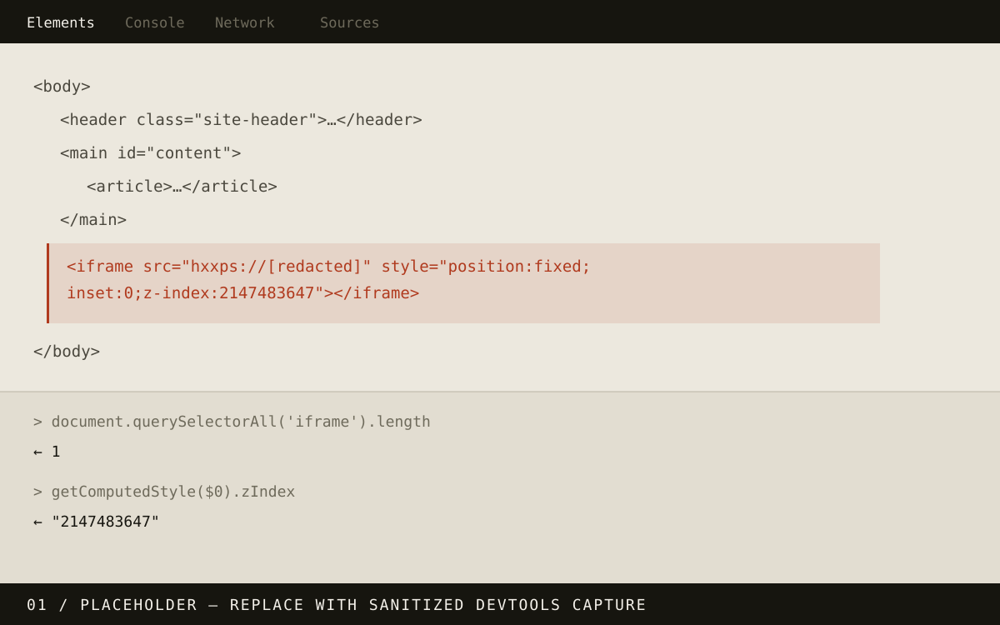
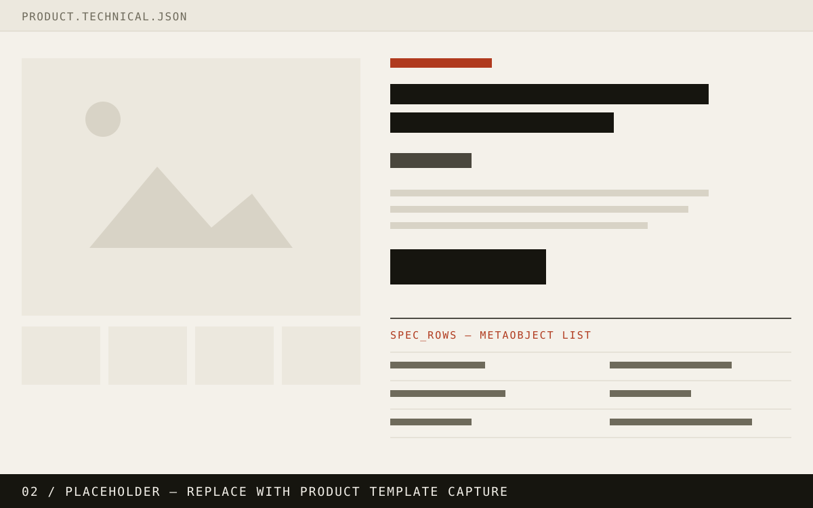
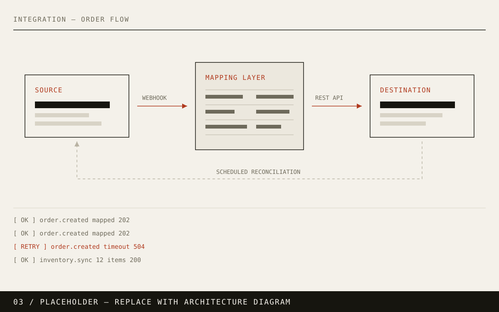
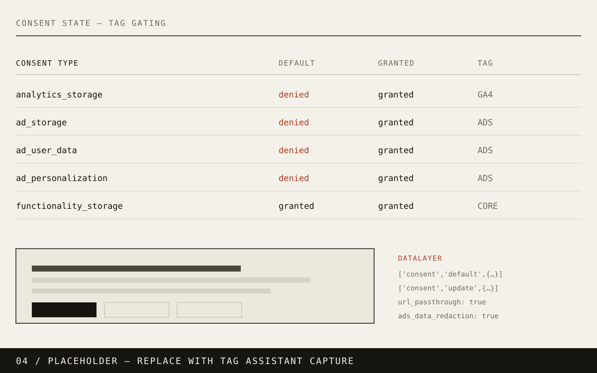
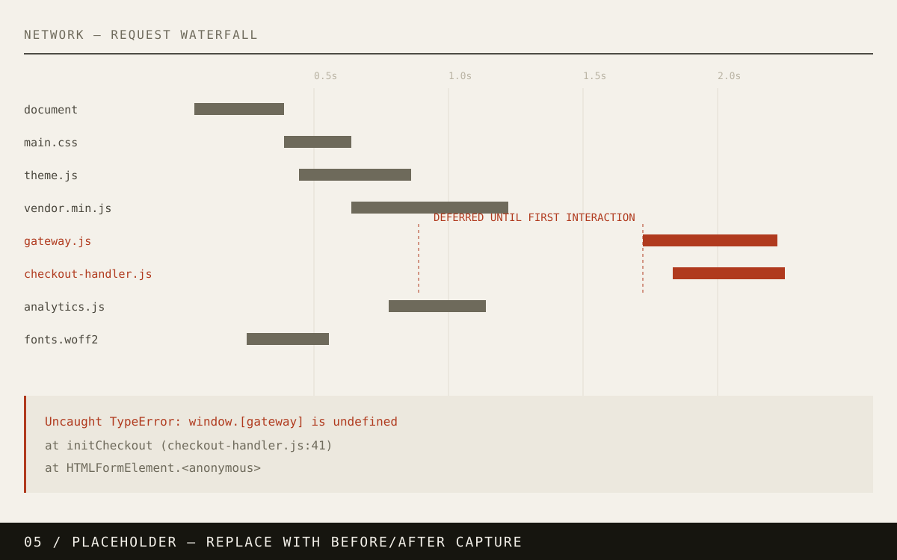
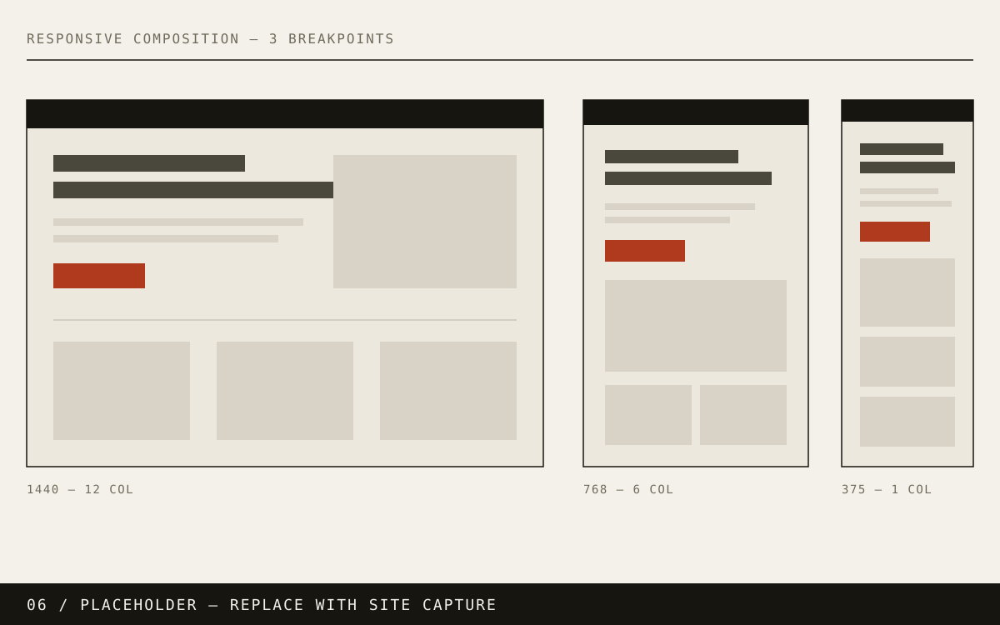

Web Developer WordPress / Shopify / WebOps
I build websites — and fix them when things get complicated.
I'm a web developer specializing in WordPress, Shopify, e-commerce, technical troubleshooting and website support. I work across frontend development, hosting, integrations, performance and security to solve problems that don't always have obvious answers.
Selected work
A selection of development, troubleshooting and technical projects.
Phase 1 — the index below is the finished interaction design. The six case-study pages are Phase 2 and are not built yet.
-
01
WordPress Malware & Phishing Investigation
Security / Incident response
Tracked down an intermittent phishing overlay that conventional website security scans were unable to identify.
- WordPress
- PHP
- JavaScript
- MySQL
- Chrome DevTools
- Security scanning tools

-
02
Shopify Custom Product Architecture
Shopify / E-commerce
Built custom product and collection functionality using Shopify Liquid, metafields, metaobjects and dynamic product data.
- Shopify
- Liquid
- HTML
- CSS
- JavaScript
- Metafields
- Metaobjects

-
03
WooCommerce & Third-Party Integration
E-commerce / Integration
Implemented and troubleshot custom WooCommerce product, checkout and third-party integration functionality.
- WordPress
- WooCommerce
- PHP
- JavaScript
- APIs
- Third-party integrations

-
04
Consent Management & Analytics
Privacy / Analytics
Implemented consent-aware analytics and marketing tracking while controlling when third-party scripts were allowed to execute.
- Google Tag Manager
- Google Analytics
- Consent Mode
- Cookiebot
- Complianz
- JavaScript

-
05
Production Performance Troubleshooting
Performance / WebOps
Diagnosed production functionality failures caused by JavaScript optimization and caching behavior.
- WordPress
- JavaScript
- WP Rocket
- Chrome DevTools
- Caching

-
06
Custom WordPress Development
Development
Built responsive custom functionality and layouts across production WordPress websites.
- WordPress
- PHP
- HTML
- CSS
- JavaScript
- ACF

How I work
Sometimes the job isn't building the page. It's figuring out why it broke.
A large part of my experience comes from supporting production websites where the solution isn't immediately obvious — broken integrations, plugin conflicts, malicious code, DNS issues, tracking problems, performance regressions and unexpected third-party behavior.
I enjoy tracing those problems back to their source and finding practical solutions.
- Malware hidden inside a WordPress database
- JavaScript optimization breaking payment functionality
- Consent configurations blocking or prematurely loading tracking
- DNS pointing to incorrect infrastructure
- Plugin conflicts causing production errors
- Dynamic Shopify data requiring custom architecture
Capabilities
Grouped by the kind of problem rather than by logo.
Development
- WordPress
- Shopify
- WooCommerce
- HTML
- CSS
- JavaScript
- PHP
- Liquid
WordPress
- ACF
- Elementor
- Divi
- Salient
- Theme customization
- Plugin troubleshooting
- Custom functionality
- Database troubleshooting
E-commerce
- WooCommerce
- Shopify
- Product architecture
- Checkout troubleshooting
- Payment integrations
- Third-party integrations
Web operations
- DNS
- Hosting
- SSL
- Website migrations
- SMTP
- Performance
- Caching
- Production troubleshooting
Security
- Malware investigation
- Database injection investigation
- SEO spam investigation
- Vulnerability remediation
- Content Security Policy
- Access auditing
Analytics & privacy
- Google Tag Manager
- Google Analytics
- Google Consent Mode
- Cookiebot
- Complianz
About
I'm Oscar, a web developer based in Honduras.
My background combines development with technical support. I've spent much of my professional experience working directly with real production websites — building new functionality, maintaining existing systems, investigating problems and communicating solutions to clients.
I primarily work with WordPress and Shopify, but I'm comfortable moving across the stack when a problem requires it.
One of the things I enjoy most about web development is troubleshooting. There's something satisfying about starting with “we don't know why this is happening” and eventually finding the answer.
I'm currently looking for a long-term remote opportunity where I can contribute as part of a development, e-commerce, support or web operations team.
Opening hand
Personal / Interactive
Every project starts with a different hand. Here’s mine.
Draw seven cards from my skills, experience and interests. Don’t like the hand? Mulligan.
Hand / 7 Mulligans / 0
The bug
“Something on the website isn’t working.”
Intermittent.
An important production page works normally for some visitors, but breaks intermittently for others.
Inspect the evidence.
Browser — clue found
- Console
- No fatal JavaScript errors.
- Network
- One third-party dependency is loading unusually late.
- Cache
- Behavior changes between cached and uncached sessions.
Application — clue found
- WordPress
- No fatal PHP errors.
- Plugins
- A performance/optimization plugin was recently updated.
- JavaScript
- Some frontend scripts are configured for delayed execution.
Infrastructure — no obvious issue
- DNS
- Resolving normally.
- SSL
- Valid.
- Server
- Responding normally.
Delayed JavaScript execution was preventing a required dependency from being available when the page needed it.
Exclude the required scripts from delayed execution and verify the affected workflow under cached and uncached conditions.
Nice.
// git blame can wait
Contact
Let's work together.
I'm currently available for remote opportunities in web development, WordPress, Shopify, WebOps and technical support.
Replies usually
within a day